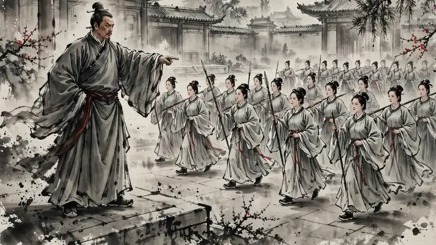

Wu, 512 BC. One scholar with a book on war. One king who wants to watch him fail. And one hundred and eighty palace women who think the whole thing is a joke.
How does command begin? Play it — and find out what your choices cost.
From the story of Sun Tzu and the concubines of Wu, as told in Sun Tzu's The Art of War, Decoded by Samdapau — ancient classics, decoded as stories.
Same courtyard, same drum — a different life depending on where you stand. About 3–5 minutes a run.
A Samdapau story game · Free to play · samdapau.github.io · Credits & Sources · Legal